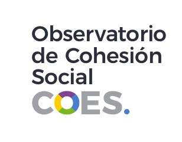
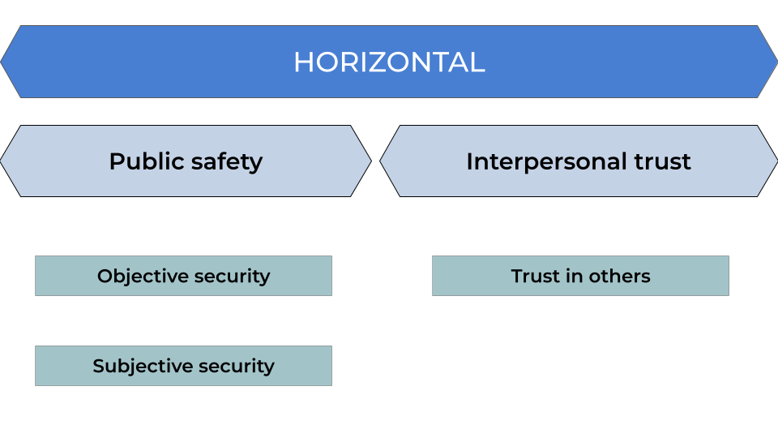
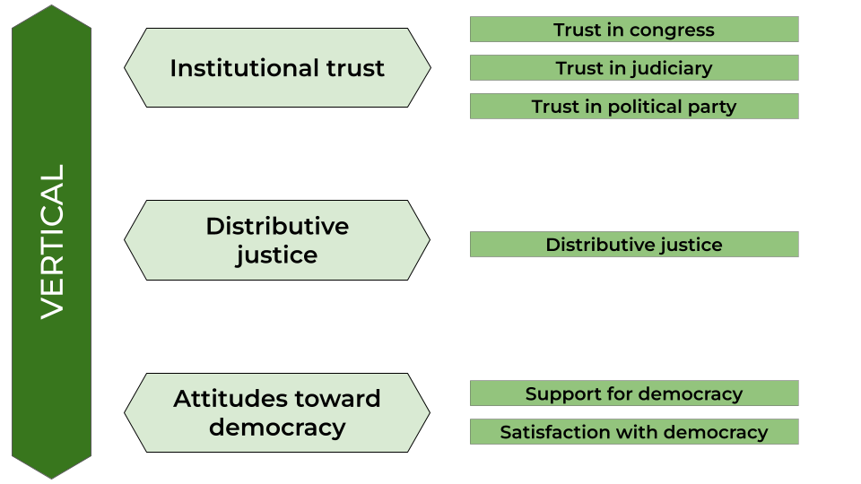
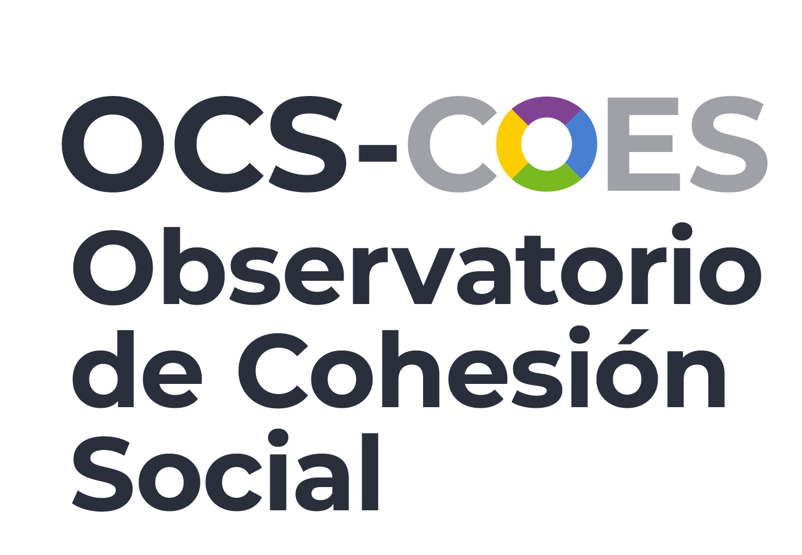
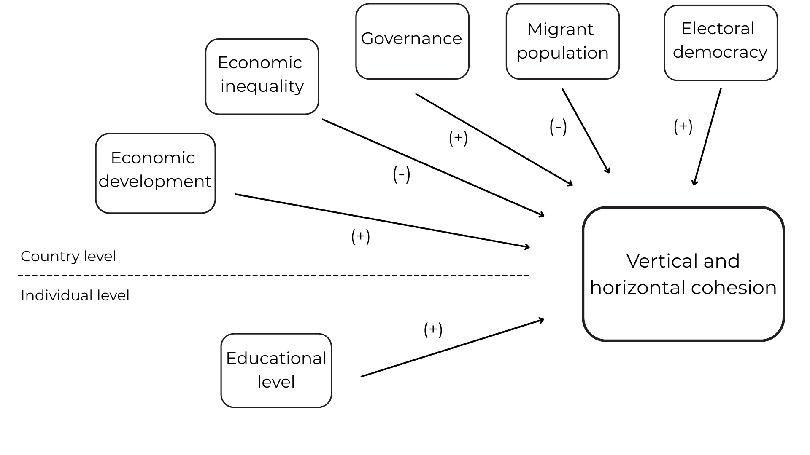
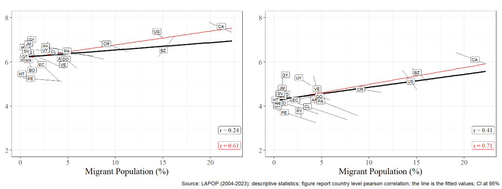
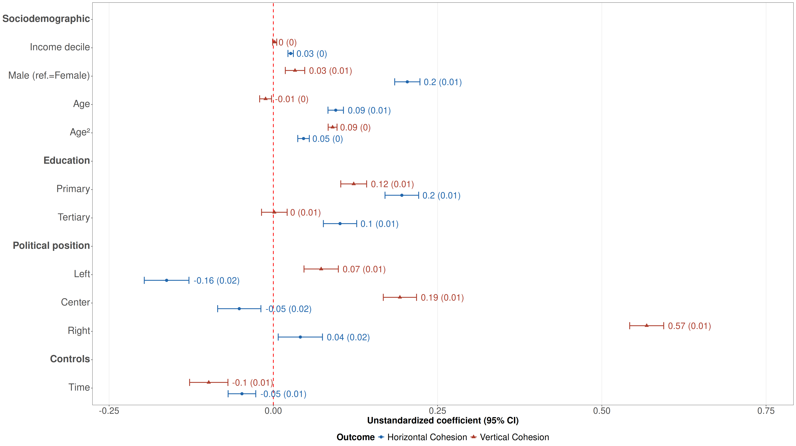
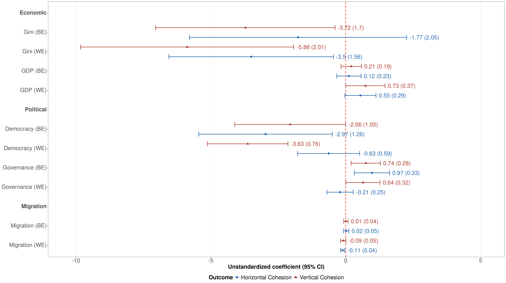
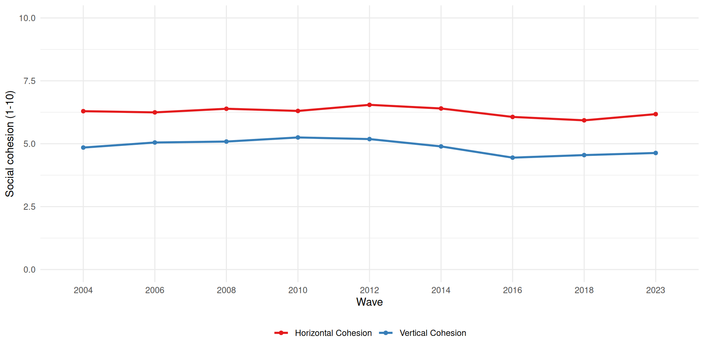

COES & Observatory of Social Cohesion:
Updates & projections
Juan Carlos Castillo1, Tomás Urzúa1, Andreas Laffert1 & Julio Iturra2
1Department of Sociology, Universidad de Chile
2Bremen International Graduate School of Social Sciences
Universität Bremen
07th April, 2026
Contents
- Updates on COES & OCS projects
- ELSOC Panel Visualization
- Social Cohesion in Latin America paper
- Comparative vignette study (Julio Iturra)
Contents
- Updates on COES & OCS projects
- ELSOC Panel Visualization
- Social Cohesion in Latin America paper
- Comparative vignette study (Julio Iturra)
COES
- End of funding
- Universidad de Chile 2026 funding
- OCS projections 2026
- improve ELSOC panel visualization
- submit paper on social cohesion in Latin America
- comparative vignette study paper
Latin America Visualizer (VISLATAM)
- based on LAPOP survey data
- 20+ countries, 2004-2022 (11 waves)
- democracy, social cohesion, trust, etc.
- 23 countries
- more than 400.000 cases
- link to visualizer VISLATAM
Conceptual & measurement model: horizontal

Conceptual & measurement model: vertical

Contents
- Updates on COES & OCS projects
- ELSOC Panel Visualization
- Social Cohesion in Latin America paper
- Comparative vignette study (Julio Iturra)
Why VISELSOC?
Visualizer for Latin America, but not something specifically focused on Chile
ELSOC panel survey in COES
Last year (2025) special funding (since it was the last year of COES) -> apply what we learned from the experience with VISLATAM to ELSOC data
Data
Secondary data from Chilean Longitudinal Social Study (ELSOC)
Panel survey that runs every year from 2016 to 2023, making it the only study of this kind in Chile and Latin America
For the visualization, the analysis includes participants who took part in at least three waves of the study, totaling 3,666 individuals.
Measurement
Measurement framework for social cohesion in Chile based on the approach proposed by Chan et al. (2006).
The framework is based on two dimensions:
Horizontal: addresses the relationships between individuals and social groups
Vertical: captures the interactions between individuals and social institutions


Measurement
Differents analytical techniques for to arrive at the final version of the measurement framework.
Sub-dimensions were calculated as average indices to facilitate the interpretation of the results.
All the decisions behind the construction of the framework can be found in this methodological document.
Construction
The visualizer was completely created by the team at the Social Cohesion Observatory (OCS).
It was built using code with Quarto and Shiny App.
The visualizer’s source code is open access and can be found in our GitHub repository
Results VISELSOC
Contents
- Updates on COES & OCS projects
- ELSOC Panel Visualization
- Social Cohesion in Latin America paper
- Comparative vignette study (Julio Iturra)
Two decades of changes in social cohesion in Latin America (2004-2023)
Juan Carlos Castillo, Julio Iturra, Gabriel Cortés & Tomás Urzúa
Department of Sociology, Universidad de Chile
Universität Bremen
07th April, 2026
Project context

- Social Cohesion Observatory (OCS) was a project funded under Center for the Study of Conflict and Social Cohesion (COES 2013-2025)
- Launched in 2020 with the aim of contributing to the analysis of social cohesion in Chile and Latin America
- It is based on experience gained from international projects focused on conceptualizing and measuring social cohesion
- This study: based on data from VISLATAM (N = 179,377, nested within 174 country waves across 25 countries)
How are the regional and national trends over the past two decades in social cohesion in Latin America?
What are the main factors associated with these changes?
Theoretical and empirical background
- In Latin America, social cohesion has become increasingly important due to the political instability, persistent inequality, and social conflicts that have characterized recent years (Salazar-Xirinachs 2023).
Two main approaches:
- Focus on macro-institutional indicators (UNDP, CEPAL) (United Nations Development Programme 2023).
Combining individual (micro) variables with macro variables (Ecosocial, OCS).
Social cohesion
“is a state of affairs concerning both the vertical and the horizontal interactions among members of society as characterized by a set of attitudes and norms that includes trust, a sense of belonging and the willingness to participate and help, as well as their behavioural manifestations” (Chan et al., 2006, p. 290).
Chan, J., To, H.-P., & Chan, E. (2006). Reconsidering Social Cohesion: Developing a Definition and Analytical Framework for Empirical Research. Social Indicators Research, 75(2), 273–302.
Dimensions of social cohesion

Associated factors
Individual level:
- Education
Country level
- Economic development
- Governance
- Economic inequality
- Migrant population
Hypotheses

Methodology
Data
- The data comes primarily from the Latin American Public Opinion Project.
Some suplements from Latinobarómetro and the World Values Survey
Sample of N = 179,377 individuals across 174 country waves in 25 countries, covering the period from 2004 to 2023.
Variables
- Dependent variables: vertical cohesion index and horizontal cohesion index.
- Individual independent variables: educational level.
- Contextual independent variables: GDP per capita, Gini Index, Electoral Democracy Index (VDEM), Governance Index (WB), migration rate.
Methods
- CFA to validate the conceptual model
- Hybrid multilevel regression models (Schmidt-Catran y Fairbrother 2016):
- \(y_{jti} = \beta_{0}(t) + \beta_{1}X_{jti} + \gamma_{be}\bar{Z}_{j} + \gamma_{we}(Z_{jt}-\bar{Z}_{j}) + v_j + u_{jt} + e_{jti}\)
Results
CFA

Migration
Horizontal
Vertical

Individual level

Macro level

Discussion
Decrease of social cohesion overall
Inequality is related negatively with social cohesion
Positive effect of governance
Negative electoral democracy?
Negative migration?
Contents
- Updates on COES & OCS projects
- ELSOC Panel Visualization
- Social Cohesion in Latin America paper
- Comparative vignette study (Julio Iturra)
Social cohesion over time
